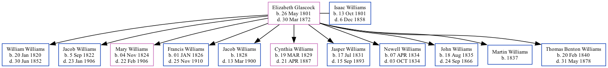

Elizabeth Williams (née Glascock) 1801 - 1872
[ Home ] | [ Surnames Index ] | [ Family History ] was born in Kentucky, USA on May 26, 1801 and married Isaac Williams (with whom she had 11 children: William Jackson, Jacob, Mary Jane, Francis Marion, Jacob N, Cynthia Ann, Jasper Newton, Newell Smith, John Wesley, Martin V and Thomas H Benton) in MO on Mar 2, 1819.
She died on Mar 30, 1872 in Cape Girardeau, Cape Girardeau, Missouri, USA.
Children
- William Jackson was born on Jan 20, 1820
- Jacob was born on Sep 5, 1822
- Mary Jane was born on Nov 4, 1824
- Francis Marion was born on Jan 1, 1826
- Jacob N was born in 1828
- Cynthia Ann was born on Mar 19, 1829
- Jasper Newton was born on Jul 17, 1831
- Newell Smith was born on Apr 7, 1834
- John Wesley was born on Aug 18, 1835
- Martin V was born in 1837
- Thomas H Benton was born on Feb 20, 1840
Family Tree
Data (GEDCOM) maintained by Jay Weston Hannah, Omaha, Nebraska, USA.
Website generated by ged2site. Last updated on Jun 18, 2024.